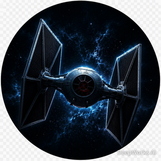
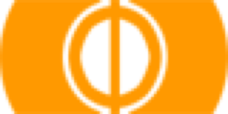

王俊洋 David Wang
智能医学工程 · 天津大学香港理工大学深圳未来技术学院
恋旧林的羁鸟，思故渊的池鱼
A soul seeker.
个人简介
About Me你好，我是王俊洋 David Wang。恋旧林的羁鸟，思故渊的池鱼——我喜欢在熟悉与未知之间探索，正在学习智能医学工程，把技术用于生命健康是我努力的方向。
Hi, I'm David Wang — a Biomedical Engineering student curious about technology and life science.
- 姓名 · Name王俊洋 · David Wang
- 学校 · School天津大学香港理工大学深圳未来技术学院
- 专业 · Major智能医学工程 · Biomedical Engineering
- 年级 · Grade大一 · Undergraduate Freshman
我的爱好
My Hobbies闲暇时喜欢运动与音乐，也爱和朋友一起玩桌游。
足球 ⚽
在球场上奔跑，享受团队配合与进球的快乐。
台球 🎱
专注、节奏与手感的较量，一杆一杆都让人专注。
VOCALOID 🎵
喜欢虚拟歌手带来的独特声线与旋律世界。
桌游 🎲
和朋友面对面，在规则与策略里碰撞出笑点。
项目 · 作品
Projects这里展示我的项目与作品。
项目 · 待补充
这里将展示我的更多作品与思考，敬请期待。
教育经历
Education
2026 - 至今
天津大学香港理工大学深圳未来技术学院 · 智能医学工程
目前本科在读（大一），关注生物医学与人工智能的交叉应用。
2023 - 2026
大连市第八中学
高中阶段，在此打下学科基础，养成对学习与探索的兴趣。

2020 - 2023
大连市第79中学
2014 - 2020
大连市第79中学附属小学
联系方式
Contact欢迎通过以下方式联系我。